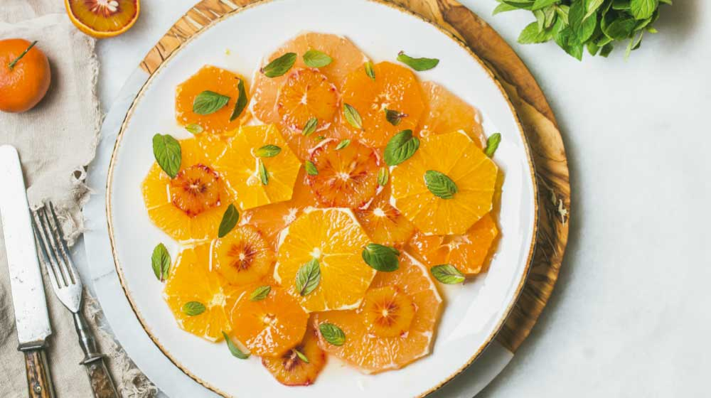

ENSALADAS
Ensalada Dulce

Espectativa
Ingredientes:
- 2 naranjas en rodajas
- 2 mandarinas en gajos
- Miel al gusto
- Hojas de menta para decorar
Pasos:
- Coloca en una ensaladera o plato extendido las rodajas de naranja.
- Posteriormente acomoda los gajos de mandarina y agrégales la miel.
- Finalmente, utiliza las hojas de menta para decorar tu ensalada.


Este es un sitio de recetas rápidas que puedes hacer facilmente para una reunión, sorpresa, algo casual o simplemente para ti.